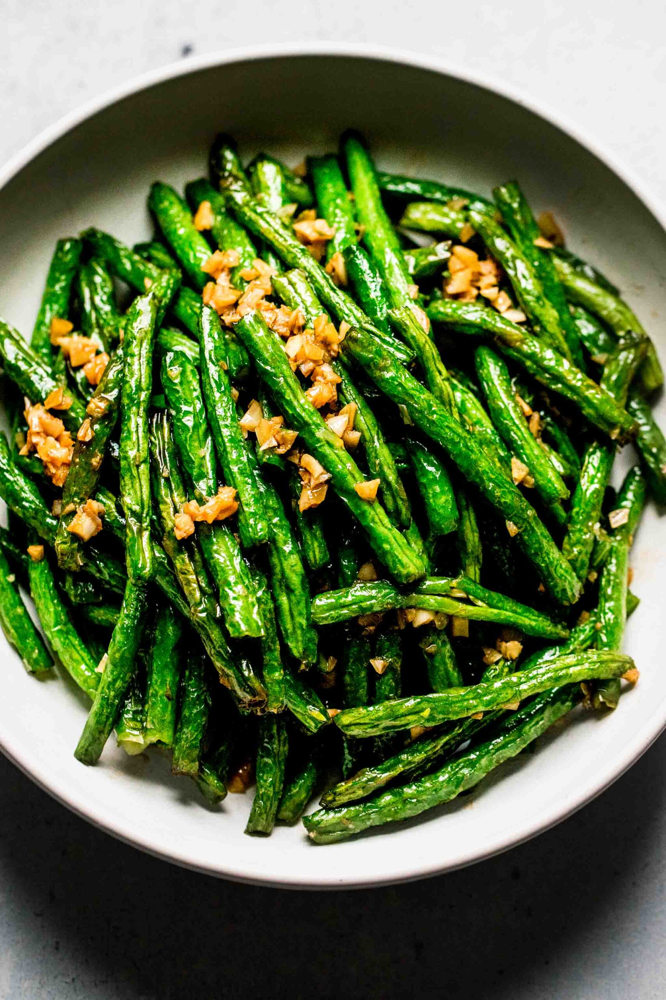

Air Fryer Garlic Green Beans

Description
Air fryer garlic green beans are a tasty and healthier alternative to traditional deep-fried green beans. This dish combines fresh green beans with garlic, olive oil, and seasonings, and cooks them in an air fryer to achieve a crispy texture while preserving their vibrant color and nutritional value.
Ingredients
- pound fresh green beans, washed and trimmed
- olive oil
- garlic, minced
- Salt and pepper to taste
Steps
- Preheat your air fryer to 400°F (200°C).
- In a mixing bowl, combine the green beans, olive oil, minced garlic, salt, and pepper. Toss well to ensure the green beans are evenly coated with the oil and seasonings.
- Place the coated green beans in the air fryer basket. Spread them out in a single layer for even cooking.
- Cook the green beans in the air fryer for about 8-10 minutes, shaking the basket or tossing the beans halfway through the cooking time. The exact cooking time may vary depending on the thickness of the green beans and your desired level of crispiness.
- Check the green beans for doneness. They should be tender and slightly crisp. If needed, cook for an additional 1-2 minutes.
- Once cooked to your liking, remove the green beans from the air fryer and transfer them to a serving dish.
- Serve the air fryer garlic green beans as a side dish with your favorite main course. They pair well with grilled meats, roasted chicken, or as a standalone snack.